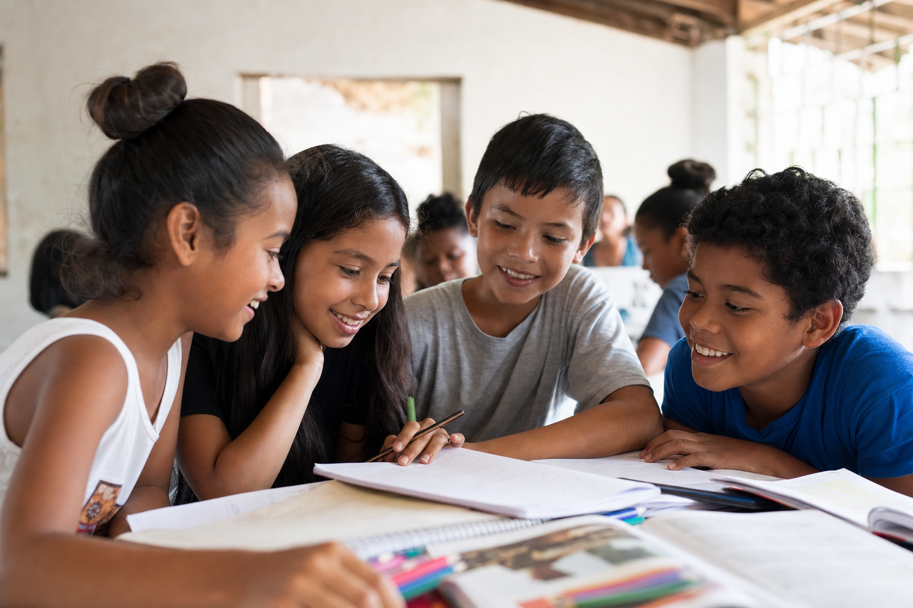
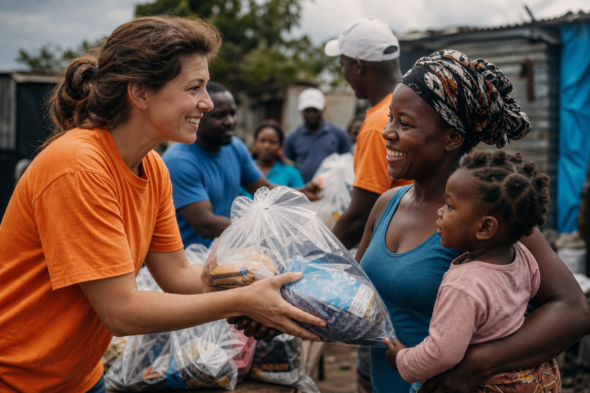
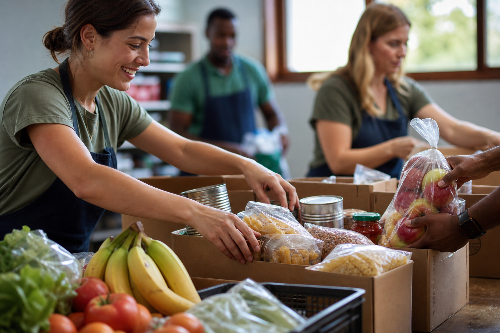

Invisibilidade
A sensação de não pertencer, de não ser visto nem valorizado.
Uma parceria contínua entre o Colégio Paulo de Tarso e escolas em vulnerabilidade social — vínculos reais que mudam crianças inteiras.
Não é doação. É conexão. Uma rede humana que transforma os dois lados — estudantes voluntários & crianças atendidas.
Parceria real e contínua, não caridade momentânea.
O Conexão Solidária propõe uma parceria contínua entre o Colégio Paulo de Tarso e escolas públicas em vulnerabilidade social — construída com presença, afeto e compromisso real, não ações pontuais de caridade.
Alunos do 9º ano do Ensino Fundamental II ao 3º ano do Ensino Médio, juntamente com professores e orientadores, realizam visitas anuais às escolas parceiras, com atividades que criam vínculos humanos genuínos.
Além das dificuldades materiais, essas crianças convivem com a invisibilidade — a sensação dolorosa de que ninguém as vê ou se importa.
A sensação de não pertencer, de não ser visto nem valorizado.
Crianças que acreditam não ser importantes ou capazes de sonhar.
Ausência de relações positivas que protegem, inspiram e motivam.
Invisibilidade · Exclusão · Falta de pertencimento
Visitas anuais das 08h às 13h, organizadas com atividades que unem, ensinam e deixam marcas positivas duradouras.
Raciocínio lógico, trabalho em equipe e criatividade em movimento.
Expressão livre por meio de arte, criatividade e construção coletiva.
Espaço seguro para expressão emocional, escuta e vínculos.
Aprendizado lúdico que desperta curiosidade e motivação escolar.
Alegria, integração e expressão corporal pedagógica.
Presença humana genuína que diz: você importa.
O projeto transforma tanto as crianças atendidas quanto os estudantes voluntários — cada lado aprende algo que nenhuma sala de aula ensina sozinha.
"O diferencial é criar vínculos reais — mostrando que elas são importantes, valorizadas e capazes."
— Proposta Conexão Solidária · Colégio Paulo de Tarso



Mensal ou trimestralmente, campanhas solidárias de arrecadação mantêm as escolas parceiras apoiadas o ano inteiro.
Cadernos, lápis, estojos, mochilas e materiais de arte.
Cestas básicas e itens essenciais para nutrição e bem-estar.
Peças em bom estado para crianças e famílias vulneráveis.
Itens essenciais para a dignidade e saúde das crianças.
Estimulam criatividade, alegria e desenvolvimento infantil.
Didáticos e infantis que abrem portas para o conhecimento.
Monte seu kit, inscreva-se e ajude a construir uma rede de apoio real.
Selecione 6 itens · Impacto: 0%
Preencha o formulário com seus dados e motivação.
Orientações com professores e monitores do projeto.
08h às 13h na escola parceira na data marcada.
Apoie campanhas de arrecadação mensais ou trimestrais.
Alunos do 9º ano do Ensino Fundamental II ao 3º ano do Ensino Médio do Colégio Paulo de Tarso, com participação permitida a partir de 14 anos, juntamente com professores e orientadores.
Não. O projeto propõe uma parceria contínua com visitas anuais e suporte mensal ou trimestral por meio de campanhas solidárias. O objetivo é construir vínculos duradouros.
Visitas das 08h às 13h incluem: jogos em grupo, dinâmicas, oficinas recreativas e educativas, atividades artísticas, rodas de conversa e momentos de acolhimento.
Materiais escolares, alimentos, roupas, produtos de higiene pessoal, brinquedos, livros didáticos e livros infantis.
Não. Todas as atividades são orientadas por professores e monitores. O mais importante é empatia e vontade genuína de fazer a diferença.
Cada visita, cada doação, cada conversa — uma rede de apoio real que dura anos.
Desenvolvedora · Projeto Acadêmico · Colégio Paulo de Tarso
Site premium em HTML5, CSS3, JavaScript e Node.js — animações 3D, cursor personalizado, split text e API de inscrições.